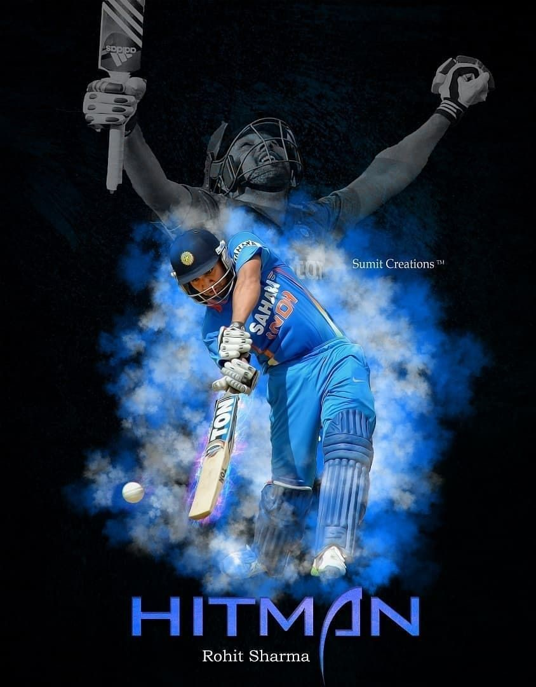

Lessons from Rohit Sharma’s cricketing journey
Lessons for managers, leaders, and working professionals from Rohit Sharma’s cricket journey.

2019 has undoubtedly been the year of Rohit Sharma. Be it Test, one-day or T20, Ro”Hit” has bossed the
bowlers in all formats, and with each passing month, the legend of Rohit Sharma has only attracted more
praise.
In case you haven’t been in on his meteoric journey this year, here is a quick recap:
Jan 2019: Rohit Sharma scores a vital 63* in the third Test at the Melbourne Cricket Ground (MCG), helping
India register the first-ever Test series win in Australia.
Feb 2019: Rohit Sharma becomes the 14th Indian to play 200th ODI and leads India in the series win against
New Zealand after ten long years.
March 2019: Rohit Sharma becomes the third-fastest cricketer to score 8000 ODI runs behind AB DE Villers and
Virat Kohli. Not to forget, Rohit played his first 70 odd ODIs as a middle-order batsman.
May 2019: Rohit Sharma leads Mumbai Indian to its fourth IPL tournament win against Chennai SuperKing (CSK)
and also surpasses most titles by an IPL franchise held by CSK.
June 2019: Rohit Sharma (140) architects India’s win against arch-rival Pakistan and goes past Virat Kohli’s
107 as the highest individual score against Pakistan in the World Cup.
July 2019: Rohit Sharma becomes the only batsman to hit five centuries in single World Cup and the leading
run-scorer of the Cricket World Cup 2019 (CWC 2019), making a record.
August 2019: Rohit Sharma surpasses Chris Gayle to become leading T20 International (T-20I) six-hitter.
September 2019: Rohit Sharma becomes leading run-scorer for India in T-20I overtaking Virat Kohli.
October 2019: Rohit Sharma celebrates the test call up with maiden hundred as an opener at Vizag and double
hundred in Ranchi to become the chief architect for a 3-0 whitewash and enters the top 10 ICC Ranking of the
Test Batsman.
Such a phenomenal landmark, and it doesn’t look like Rohit Sharma is stopping anytime soon. But as Alex
Altman, author of Time Money, rightly said: “Success is like an iceberg, what people see is only on the
surface.”
If you have a lump of coal and you apply immense pressure, and it will do one of two things: it crumbles
into dust, or it will turn into a diamond. India, especially MS Dhoni, understood the value of Rohit Sharma
and wanted him to play XI at any cost, and current team management’s decisions are an example of how Rohit
turned into a priceless diamond they always knew he was. His journey has many lessons for talent managers
and leaders to excel and succeed in today’s uncertain world.